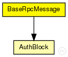
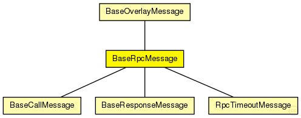

This documentation is released under the Creative Commons license
This documentation is released under the Creative Commons licenseA basic Remote-Procedure-Call message used for calls and return values
The following diagram shows usage relationships between types. Unresolved types are missing from the diagram. Click here to see the full picture.
The following diagram shows inheritance relationships for this type. Unresolved types are missing from the diagram. Click here to see the full picture.
| BaseOverlayMessage (packet) |
Base class for all messages handled by overlay modules |
| BaseCallMessage (packet) |
A basic Remote-Procedure-Call message |
| BaseResponseMessage (packet) |
A basic Remote-Procedure-Response message |
| RpcTimeoutMessage (packet) |
The RPC Timeout self-message |
| Name | Type | Description |
|---|---|---|
| srcNode | NodeHandle |
source node |
| statType | int |
message type for stats |
| authBlock | AuthBlock[] |
optional authentication block containing a signature |
| nonce | unsigned int |
nonce to match RPC responses to corresponding calls |
| type | int |
message type |
// // A basic Remote-Procedure-Call message used for calls and return values // packet BaseRpcMessage extends BaseOverlayMessage { unsigned int nonce; // nonce to match RPC responses to corresponding calls NodeHandle srcNode; // source node AuthBlock authBlock[] @sizetype(uint8_t); // optional authentication block containing a signature }
This documentation is released under the Creative Commons license